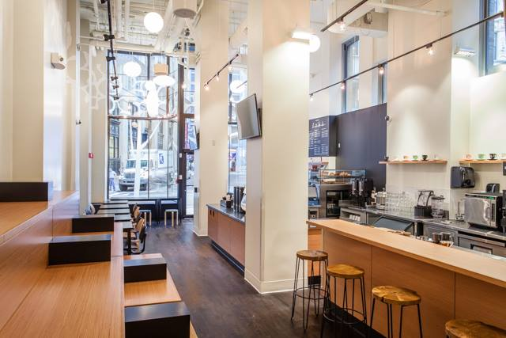
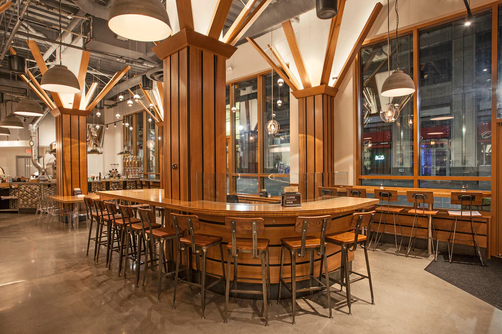
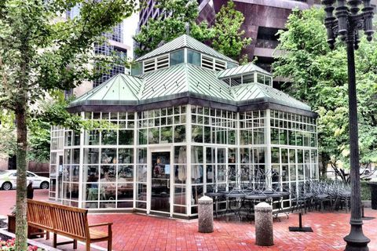
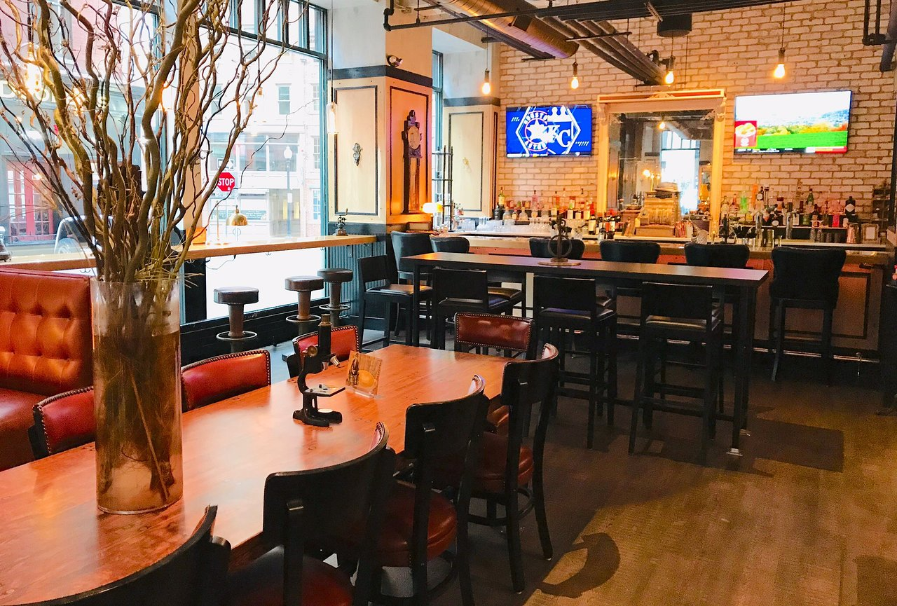

Ogawa Cafe - Best know for is specialty coffees and stunning latte art. It can get very busy on at certain time because it is so popular! Lattes are expensive but yummy!

Jaho Coffee Roasters- Located close to the Boston Commons and Emerson college! They roast their own coffee beans and they also have espresso martinis and wine! Their iced lattes are super fun because they use super crushed ice cubes almost giving a snow cone effect, if that makes sense. Over all great vibe and enough space to do work in!

Sip Cafe- Adorable free standing coffeeshop that looks like a green house! There is so much natural light inside and there is a patio that is perfect for the summer time and warm weather! They make delicious coffee and server beers and wines as well! Something special about this cafe is that they have dominos to play!

Tradesman Lounge- If you are looking for a perfect place to work from home in, look no furthur! Tradesman has great wifi and numerous outlets to charge your devices. They are best know for their incredible atmosphere, and their fun and playful specialty croissants that are different every weekend! They also have a bar area to grab drinks with a friend, or coworker.